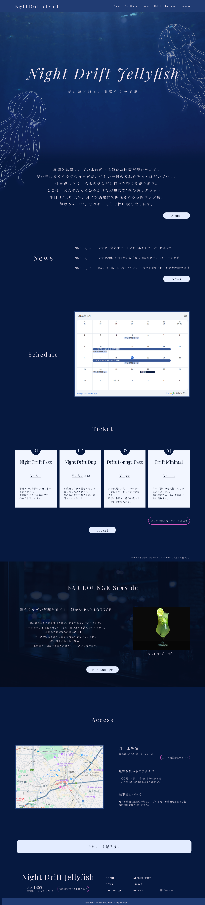
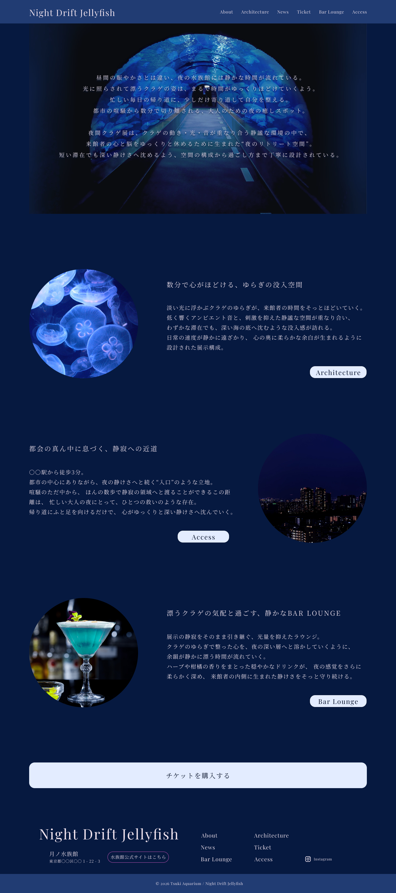
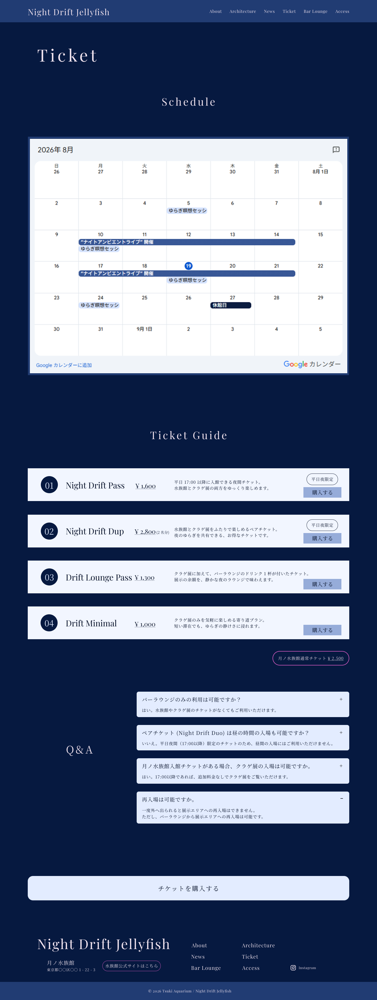

Night Drift Jellyfish
View Site- 概要
-
修了制作として架空の水族館にて開催されるクラゲ展の特設サイトを想定して制作
制作期間 : 1ヶ月 (2026/07 ~ 2026/08)
制作ページ : Top・About・Ticket
URL : https://github.com/ntntnt77/NightDriftJellyfish/tree/main

- 企画の背景
-
月ノ水族館には、夕方以降の来館者数が伸び悩んでおり、夜の時間帯の魅力を十分に届けられていないという課題があった。
そこで、仕事終わりの大人が“ふらっと立ち寄れる”新しい楽しみ方を提案し、夜間の来館を促進するために、夜間限定のクラゲ展を企画。 - ターゲット : 20～30代の都市部在住の仕事に追われる女性
-
日々の仕事に追われ疲れがたまっている一方で、癒しを求める気持ちは強いものの、行動に移すハードルが高い
- コンセプト : 夜にだけ出会える、静かな癒しの空間。
-
クラゲ展の認知度向上を図るとともに、仕事終わりでもふらっと訪れやすい雰囲気、夜ならではの特別感を伝える。
“大人も楽しめる水族館” としてのブランドを確立、夜間の来館数増加への貢献を目指す。 - 工夫した点
-
- ・静けさや余白を感じられるよう、文字間隔や行間を広めに設定、背景をネイビーブルーで統一し、落ち着いた世界観を表現
- ・CSS アニメーションや jQuery によるフェードインアニメーションを用いて、クラゲのゆらぎを感じられる柔らかな動きを演出
- ・フォントは明朝体やセリフ体を使用し、落ち着いた雰囲気と大人っぽさを表現
- ・チケット購入への導線をスムーズにするため、各ページ下部にチケットページへのリンクボタンを配置
ボタンはチケットページ上部ではなく、購入に直結する 「チケットガイド」 部分へ直接遷移するよう設計 - ・各チケットの違いがひと目で比較できるよう、一覧で確認しやすいレイアウトを採用
- ・水族館自体にも興味を持ったタイミングで自然に誘導できるように水族館公式サイトへの導線を各所に配置
水族館公式サイトへのリンクだと直感的にわかるよう、デザインのトーンを統一 - ・バーラウンジは別空間であることを表現するため、背景デザインを切り替え、展示エリアとは異なる雰囲気を演出
- デザイン
-
TOP ページ

About ページ

Ticket ページ

©2026 yoshikawa